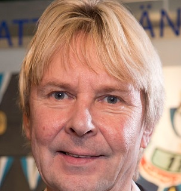

Matti Nykänen
Matti Ensio Nykänen 17 July 1963 – 4 February 2019) was a Finnish ski jumper who competed from 1981 to 1991. He is one of the most successful ski jumpers of all time, having won five Winter Olympic medals (four gold), nine World Championship medals (five gold), and 22 Finnish Championship medals (14 gold). Most notably, he won three gold medals at the 1988 Winter Olympics, becoming, along with Yvonne van Gennip of the Netherlands, the most medaled athlete that winter. Nykänen is the only ski jumper in history to have won all five of the sport's major events: a gold medal at the Winter Olympics (three times), the Ski Jumping World Championships (once), the Ski Flying World Championships (once), four World Cup overall titles, and the Four Hills Tournament (twice). His four World Cup titles is an all-time male record shared with Adam Małysz. Nykänen remains the only male five-time ski flying world record holder in history. From the 1990s onwards, Nykänen's status as a celebrity was mainly fueled by his personal relationships, his career as a pop singer, and various incidents often related to heavy use of alcohol and violent behaviour. He was sentenced to 26 months in prison following a stabbing incident in 2004, and again for 16 months following an aggravated assault on his wife in 2009.